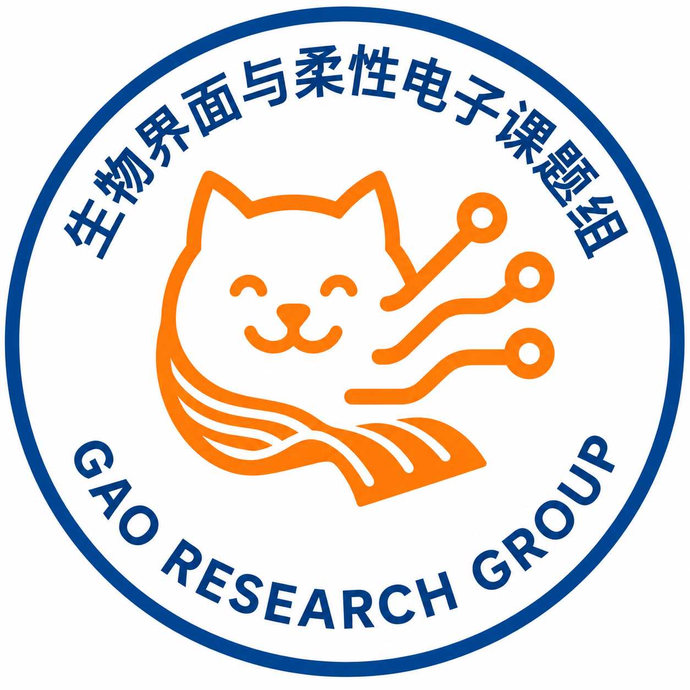

Flexible and wearable electronics
Compliant sensors and systems engineered for reliable function under motion and deformation.
IAPME · University of Macau
Flexible Electronics · Biointerfaces · Smart Materials
Institute of Applied Physics and Materials Engineering (IAPME)
University of Macau

Research directions
We investigate soft functional materials, biointegrated devices, and scalable manufacturing approaches for the next generation of intelligent electronics.
Compliant sensors and systems engineered for reliable function under motion and deformation.
Soft, skin-compatible interfaces that bridge biological signals and digital systems.
Adaptive materials with programmable mechanics and controllable interfacial properties.
Scalable fabrication methods for complex, customized, and multifunctional devices.
Materials and device strategies that reduce waste and support responsible technology lifecycles.
Our approach
Our group brings together materials science, mechanical design, advanced manufacturing, and biointerface engineering. We aim to understand the principles that make soft systems work—and use those insights to create technologies with real human relevance.
Reveal relationships between structure, mechanics, and function.
Translate scientific understanding into robust devices and interfaces.
Advance scalable, accessible, and environmentally conscious solutions.
We welcome motivated researchers from materials science, engineering, physics, chemistry, and related fields.